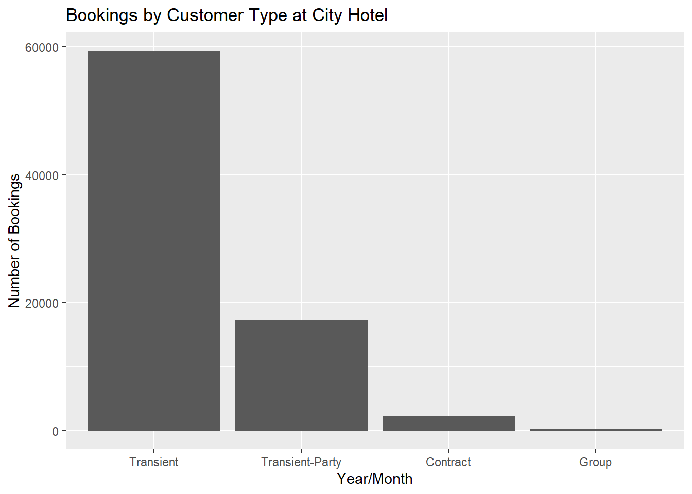

Code
library(tidyverse)
library(kableExtra)
knitr::opts_chunk$set(echo = TRUE, warning=FALSE, message=FALSE)library(tidyverse)
library(kableExtra)
knitr::opts_chunk$set(echo = TRUE, warning=FALSE, message=FALSE)Today’s challenge is to
Read in one (or more) of the following data sets, available in the posts/_data folder, using the correct R package and command.
bookings <- read_csv("_data/hotel_bookings.csv") #read in the data; no special procedures are required as data is cleanAdd any comments or documentation as needed. More challenging data may require additional code chunks and documentation.
Using a combination of words and results of R commands, can you provide a high level description of the data? Describe as efficiently as possible where/how the data was (likely) gathered, indicate the cases and variables (both the interpretation and any details you deem useful to the reader to fully understand your chosen data).
The hotel_bookings.csv contains 119,390 rows and 32 columns. A case corresponds to a hotel booking at a hotel, and the data covers hotel bookings at the City Hotel and Resort Hotel from 2015 to 2017. The columns correspond to variables providing descriptive and numeric information on each booking, such as the lead time (which indicates how far ahead of the intended stay date the booking was made), length of stay, the reservation history of the guest, the number of guests, the type of guests, country of origin of guests, additional perks requested, the status and type of the booking, the agent and/or company used to book (if applicable), and etc.
str(bookings) #obtain a summary of data's variablesspc_tbl_ [119,390 × 32] (S3: spec_tbl_df/tbl_df/tbl/data.frame)
$ hotel : chr [1:119390] "Resort Hotel" "Resort Hotel" "Resort Hotel" "Resort Hotel" ...
$ is_canceled : num [1:119390] 0 0 0 0 0 0 0 0 1 1 ...
$ lead_time : num [1:119390] 342 737 7 13 14 14 0 9 85 75 ...
$ arrival_date_year : num [1:119390] 2015 2015 2015 2015 2015 ...
$ arrival_date_month : chr [1:119390] "July" "July" "July" "July" ...
$ arrival_date_week_number : num [1:119390] 27 27 27 27 27 27 27 27 27 27 ...
$ arrival_date_day_of_month : num [1:119390] 1 1 1 1 1 1 1 1 1 1 ...
$ stays_in_weekend_nights : num [1:119390] 0 0 0 0 0 0 0 0 0 0 ...
$ stays_in_week_nights : num [1:119390] 0 0 1 1 2 2 2 2 3 3 ...
$ adults : num [1:119390] 2 2 1 1 2 2 2 2 2 2 ...
$ children : num [1:119390] 0 0 0 0 0 0 0 0 0 0 ...
$ babies : num [1:119390] 0 0 0 0 0 0 0 0 0 0 ...
$ meal : chr [1:119390] "BB" "BB" "BB" "BB" ...
$ country : chr [1:119390] "PRT" "PRT" "GBR" "GBR" ...
$ market_segment : chr [1:119390] "Direct" "Direct" "Direct" "Corporate" ...
$ distribution_channel : chr [1:119390] "Direct" "Direct" "Direct" "Corporate" ...
$ is_repeated_guest : num [1:119390] 0 0 0 0 0 0 0 0 0 0 ...
$ previous_cancellations : num [1:119390] 0 0 0 0 0 0 0 0 0 0 ...
$ previous_bookings_not_canceled: num [1:119390] 0 0 0 0 0 0 0 0 0 0 ...
$ reserved_room_type : chr [1:119390] "C" "C" "A" "A" ...
$ assigned_room_type : chr [1:119390] "C" "C" "C" "A" ...
$ booking_changes : num [1:119390] 3 4 0 0 0 0 0 0 0 0 ...
$ deposit_type : chr [1:119390] "No Deposit" "No Deposit" "No Deposit" "No Deposit" ...
$ agent : chr [1:119390] "NULL" "NULL" "NULL" "304" ...
$ company : chr [1:119390] "NULL" "NULL" "NULL" "NULL" ...
$ days_in_waiting_list : num [1:119390] 0 0 0 0 0 0 0 0 0 0 ...
$ customer_type : chr [1:119390] "Transient" "Transient" "Transient" "Transient" ...
$ adr : num [1:119390] 0 0 75 75 98 ...
$ required_car_parking_spaces : num [1:119390] 0 0 0 0 0 0 0 0 0 0 ...
$ total_of_special_requests : num [1:119390] 0 0 0 0 1 1 0 1 1 0 ...
$ reservation_status : chr [1:119390] "Check-Out" "Check-Out" "Check-Out" "Check-Out" ...
$ reservation_status_date : Date[1:119390], format: "2015-07-01" "2015-07-01" ...
- attr(*, "spec")=
.. cols(
.. hotel = col_character(),
.. is_canceled = col_double(),
.. lead_time = col_double(),
.. arrival_date_year = col_double(),
.. arrival_date_month = col_character(),
.. arrival_date_week_number = col_double(),
.. arrival_date_day_of_month = col_double(),
.. stays_in_weekend_nights = col_double(),
.. stays_in_week_nights = col_double(),
.. adults = col_double(),
.. children = col_double(),
.. babies = col_double(),
.. meal = col_character(),
.. country = col_character(),
.. market_segment = col_character(),
.. distribution_channel = col_character(),
.. is_repeated_guest = col_double(),
.. previous_cancellations = col_double(),
.. previous_bookings_not_canceled = col_double(),
.. reserved_room_type = col_character(),
.. assigned_room_type = col_character(),
.. booking_changes = col_double(),
.. deposit_type = col_character(),
.. agent = col_character(),
.. company = col_character(),
.. days_in_waiting_list = col_double(),
.. customer_type = col_character(),
.. adr = col_double(),
.. required_car_parking_spaces = col_double(),
.. total_of_special_requests = col_double(),
.. reservation_status = col_character(),
.. reservation_status_date = col_date(format = "")
.. )
- attr(*, "problems")=<externalptr> #create for loop of table() to create frequency tables of all variables in data
#for (i in colnames(bookings)){
#print(table(select(bookings, i)))
#}Conduct some exploratory data analysis, using dplyr commands such as group_by(), select(), filter(), and summarise(). Find the central tendency (mean, median, mode) and dispersion (standard deviation, mix/max/quantile) for different subgroups within the data set.
#Recode arrival_date_month to numeric variable for convenience
bookings$arrival_date_month <- recode(bookings$arrival_date_month, "January" = 1, "February" = 2, "March" = 3, "April" = 4, "May" = 5, "June" = 6, "July" = 7, "August" = 8, "September" = 9, "October" = 10, "November" = 11, "December" = 12)
#Concatenate arrival_date_month and arrival_date_year
bookings$arrival_date_month <- as.character(bookings$arrival_date_month)
bookings$arrival_date_year <- as.character(bookings$arrival_date_year)
bookings$arrival_date <- paste(bookings$arrival_date_year, bookings$arrival_date_month)
#Calculate total days booked
bookings$total_days_stays = bookings$stays_in_weekend_nights + bookings$stays_in_week_nights
#Calculate total guests
bookings$total_guests = bookings$adults + bookings$children + bookings$babies
#Calculate total number of children and babies
bookings$under_18_guests = bookings$children + bookings$babiesCity Hotel has had more bookings than Resort Hotel for the entire period of the data; although the number of bookings differ, bookings at both hotels follow a similar seasonal pattern.
#Find the total number of bookings at each hotel per each year-month
bookings %>%
group_by(hotel, arrival_date) %>% #want to count the number of reservations at each hotelin a year and month
mutate(count = n()) %>% #this does the counting
select(hotel, arrival_date, count) %>% #this subsets the data into the columns we are interested in
ungroup() %>%
group_by(hotel, arrival_date) %>% #only want to keep top country per hotel per year and month
arrange(hotel, arrival_date, desc(count)) %>% #order from most reservations to least by hotel, year, month
unique() %>% #eliminate duplicate rows
filter(row_number()==1) %>%
ggplot(aes(x=arrival_date, y=count, group=hotel, color=hotel)) +
geom_line() +
theme(axis.text=element_text(size=4.5)) +
ggtitle("Total Bookings in Year/Month") +
xlab("Year/Month") + ylab("Number of Bookings")
City Hotel has had more cancellations than Resort Hotel for the entire period of the data; although the number of cancellations differ, cancellations at both hotels follow a similar seasonal pattern.
#Find the total number of cancellations at each hotel per each year-month
bookings_canceled <- bookings[bookings$is_canceled==1,] #subset to cancellations
bookings_canceled %>%
group_by(hotel, arrival_date, is_canceled) %>% #want to count the number of cancellations
mutate(count = n()) %>% #this does the counting
select(hotel, arrival_date, is_canceled, count) %>% #this subsets the data into the columns we are interested in
ungroup() %>%
group_by(hotel, arrival_date) %>%
arrange(hotel, arrival_date, desc(count)) %>% #order from most reservations to least by hotel, year, month
unique() %>% #eliminate duplicate rows
filter(row_number()==1) %>%
ggplot(aes(x=arrival_date, y=count, group=hotel, color=hotel)) +
geom_line() +
theme(axis.text=element_text(size=4.5)) +
ggtitle("Total Cancelled Bookings in Year/Month") +
xlab("Year/Month") + ylab("Number of Cancellations")
Portugal top bookings for both City Hotel and Resort Hotel.
#Find the top ten countries that book the most at each hotel
city <- bookings[bookings$hotel=="City Hotel",]
resort <- bookings[bookings$hotel=="Resort Hotel",]
city %>%
group_by(country) %>% #want to count the number of reservations per country
mutate(count = n()) %>% #this does the counting
select(country, count) %>% #this subsets the data into the columns we are interested in
arrange(desc(count)) %>% #order from most reservations to least
unique() %>% #eliminate duplicate rows
ungroup() %>%
slice(1:10) %>% #identify the top five countries with the most reservations in a year and month for each hotel %>%
ggplot(aes(y=count, x=reorder(country, -count))) +
geom_bar(stat="identity") +
ggtitle("Top 10 Bookings by Country of Origin at City Hotel") +
xlab("Year/Month") + ylab("Number of Bookings")
resort %>%
group_by(country) %>% #want to count the number of reservations per country
mutate(count = n()) %>% #this does the counting
select(country, count) %>% #this subsets the data into the columns we are interested in
arrange(desc(count)) %>% #order from most reservations to least
unique() %>% #eliminate duplicate rows
ungroup() %>%
slice(1:10) %>% #identify the top five countries with the most reservations in a year and month for each hotel %>%
ggplot(aes(y=count, x=reorder(country, -count))) +
geom_bar(stat="identity") +
ggtitle("Top 10 Bookings by Country of Origin at Resort Hotel") +
xlab("Year/Month") + ylab("Number of Bookings")
For both City Hotel and Resort Hotel, transient customers book the most, followed by transient-party, contract, and group.
#Find the most common customer_type at each hotel
city %>%
group_by(customer_type) %>%
mutate(count = n()) %>%
select(customer_type, count) %>%
arrange(desc(count)) %>%
unique() %>% #eliminate duplicate rows
ggplot(aes(y=count, x=reorder(customer_type, -count))) +
geom_bar(stat="identity") +
ggtitle("Bookings by Customer Type at City Hotel") +
xlab("Year/Month") + ylab("Number of Bookings")
resort %>%
group_by(customer_type) %>%
mutate(count = n()) %>%
select(customer_type, count) %>%
arrange(desc(count)) %>%
unique() %>% #eliminate duplicate rows
ungroup() %>%
ggplot(aes(y=count, x=reorder(customer_type, -count))) +
geom_bar(stat="identity") +
ggtitle("Bookings by Customer Type at Resort Hotel") +
xlab("Year/Month") + ylab("Number of Bookings")
#Find the mean and standard deviation days_in_waiting_list for hotel
bookings %>%
group_by(hotel) %>% #group data by hotel, year, month
select(hotel, days_in_waiting_list) %>% #keep the variables we are interested in
summarise(mean=mean(days_in_waiting_list), sd=sd(days_in_waiting_list), na.rm=TRUE) %>% #calculate the mean by hotel
kbl()| hotel | mean | sd | na.rm |
|---|---|---|---|
| City Hotel | 3.2267742 | 20.87089 | TRUE |
| Resort Hotel | 0.5277584 | 7.42858 | TRUE |
boxplot(days_in_waiting_list~hotel,data=bookings, main="Days in Waiting List",xlab="Customer Type", ylab="Days")
bookings %>%
group_by(hotel) %>% #group data by hotel, year, month
select(hotel, days_in_waiting_list) %>% #keep the variables we are interested in
summarise(n = n(),
min = fivenum(days_in_waiting_list)[1],
Q1 = fivenum(days_in_waiting_list)[2],
median = fivenum(days_in_waiting_list)[3],
Q3 = fivenum(days_in_waiting_list)[4],
max = fivenum(days_in_waiting_list)[5]) %>%
kbl()| hotel | n | min | Q1 | median | Q3 | max |
|---|---|---|---|---|---|---|
| City Hotel | 79330 | 0 | 0 | 0 | 0 | 391 |
| Resort Hotel | 40060 | 0 | 0 | 0 | 0 | 185 |
#Find the mean and standard deviation days_in_waiting_list for hotel by customer_type
bookings %>%
group_by(hotel, customer_type) %>%
select(hotel, customer_type, days_in_waiting_list) %>% #keep the variables we are interested in
summarise(mean=mean(days_in_waiting_list), sd=sd(days_in_waiting_list), na.rm=TRUE) %>% #calculate the mean by hotel and customer_type
kbl()| hotel | customer_type | mean | sd | na.rm |
|---|---|---|---|---|
| City Hotel | Contract | 0.0000000 | 0.000000 | TRUE |
| City Hotel | Group | 0.3003413 | 3.629016 | TRUE |
| City Hotel | Transient | 1.9799845 | 15.139183 | TRUE |
| City Hotel | Transient-Party | 7.9774419 | 34.329947 | TRUE |
| Resort Hotel | Contract | 0.0906532 | 2.070096 | TRUE |
| Resort Hotel | Group | 0.4401408 | 7.417385 | TRUE |
| Resort Hotel | Transient | 0.0129101 | 1.003255 | TRUE |
| Resort Hotel | Transient-Party | 2.6268772 | 16.474777 | TRUE |
bookings %>%
group_by(hotel, customer_type) %>%
select(hotel, customer_type, days_in_waiting_list) %>% #keep the variables we are interested in
summarise(n = n(),
min = fivenum(days_in_waiting_list)[1],
Q1 = fivenum(days_in_waiting_list)[2],
median = fivenum(days_in_waiting_list)[3],
Q3 = fivenum(days_in_waiting_list)[4],
max = fivenum(days_in_waiting_list)[5]) %>%
kbl()| hotel | customer_type | n | min | Q1 | median | Q3 | max |
|---|---|---|---|---|---|---|---|
| City Hotel | Contract | 2300 | 0 | 0 | 0 | 0 | 0 |
| City Hotel | Group | 293 | 0 | 0 | 0 | 0 | 44 |
| City Hotel | Transient | 59404 | 0 | 0 | 0 | 0 | 391 |
| City Hotel | Transient-Party | 17333 | 0 | 0 | 0 | 0 | 379 |
| Resort Hotel | Contract | 1776 | 0 | 0 | 0 | 0 | 50 |
| Resort Hotel | Group | 284 | 0 | 0 | 0 | 0 | 125 |
| Resort Hotel | Transient | 30209 | 0 | 0 | 0 | 0 | 122 |
| Resort Hotel | Transient-Party | 7791 | 0 | 0 | 0 | 0 | 185 |
Be sure to explain why you choose a specific group. Comment on the interpretation of any interesting differences between groups that you uncover. This section can be integrated with the exploratory data analysis, just be sure it is included.
First, we compared the mean and standard deviation of days_in_waiting_list between City and Resort Hotel. Comparing the number of days in the waiting list between hotels is helpful, as it provides customers information on how quickly they can expect to get a room. The mean tells us that on average, customers can expect to wait three days at City Hotel versus half a day at Resort Hotel. The standard deviation of days_in_waiting_list for City Hotel is about three times higher than Resort Hotel. This implies that the wait time at City Hotel is also less consistent than Resort Hotel; it can vary widely.
The plot shows that City Hotel has a wider range and higher max days in waiting list value. This corresponds to what was observed from the standard deviation. So, customers at the City Hotel can expect to wait significantly longer than customers at the Resort Hotel.
Second, we compared the mean and standard deviation of days_in_waiting_list between City and Resort Hotel broken down by customer type. Breaking this comparison down by customer type is helpful, because it reveals whether certain customer types are more likely to wait longer. The means reveal that Transient-Party customers wait the longest for both City Hotel and Resort Hotel; City Hotel Transient-Party customers wait on average 8 days while Resort Hotel Transient-Party customers wait on average 2 and a half days. The standard deviation for City Hotel Transient-Party customers is twice that of the Resort Hotel Transient-Party customers, meaning that the average wait time for City Hotel Transient-Party customers varies by a large margin.
Finally, the five number summary consisting of the minimum, first quartile, median, third quartile, and maximum reveals that the majority of customers (irregardless of customer type) do not wait. The third quartile is the 75th percentile, meaning that 75% of customers fall under this value, which happens to be 0 across all customer types and hotels. This means 75% of customers do not wait. The maximum reveals that Transient and Transient-Party customers at City Hotel account for the largest outliers - 391 and 379 days in the waiting list respectively - compared to 122 and 185 at Resort Hotel. These outliers are pulling up the mean days in waiting list upward for City Hotel; this explains why the mean and standard deviation at City Hotel is much higher than Resort Hotel.